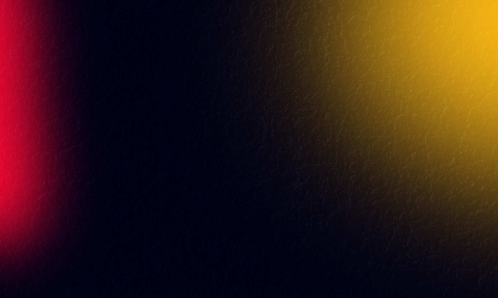

Son aves marinas conocidas por su estilo de vida único y su apariencia adorable.
Hábitat: Los pingüinos viven en las regiones frías del hemisferio sur, como la Antártida y las islas subantárticas.
Dieta: Se alimentan principalmente de peces y krill, y son excelentes cazadores bajo el agua.
Características Físicas: Plumaje negro y blanco para camuflarse en el agua y nieve. Sus alas se convirtieron en aletas para nadar.